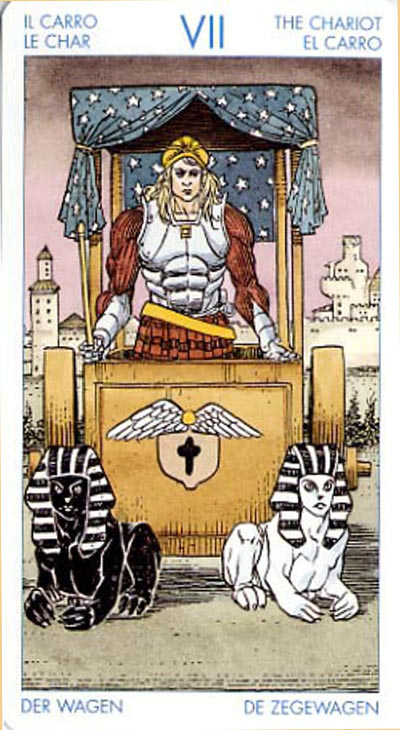

Повозка
Один из способов идти вперед состоит в том, чтобы заставить человека сталкиваться с препятствиями и конфликтами. Неблагоразумный и незрелый человек старается подавить других своей волей, сталкиваясь в результате с ненужными препятствиями. Однако с мудростью и зрелостью приходит также способность отличать ситуации, в которых нужно проявить твердость и пойти на конфликт, от ситуаций, где нужно поддаться и уступить.
Наш жизненный путь - это постоянный танец между наступлением и отступлением, между продвижением вперед и остановками, которые необходимы для того, чтобы мы открыли для себя красоту и покой окружающей жизни.
Смысл карты: некая сила понуждает тебя оставить то, что ты имеешь, забыть о прежнем– о доме, о работе, о товарищах. Тебя переполняет энергия, и ты ищешь нового поприща для ее применения. Отправляйся же в путь, и пусть этот этап твоего путешествия станет для тебя открытием нового мира. Пусть разум повелевает тобою, но не стремись совершенно избавиться от чувств и эмоций: без них твоя Повозка может опрокинуться.
Значение: При ответах на большинство вопросов эта карта в прямом положении означает конец одного периода жизни и начало следующего, нового. В чисто практическом смысле это может быть смена места жительства или работы, просто путешествие или поездка.
Личность сформирована и способна функционировать в этом мире, прогресс становится возможным.
Колесница означает ваш значительный рывок вперед. Она показывает, что вы вырвались из круга прежних интересов и пошли новым путем. Движут этим стремление к свободе, честолюбие, поиск утраченного рая или просто жажда самореализации. Колесница - единственная карта в колоде Таро, связывающая подобный порыв с ощущением радости и уверенности в себе.
Во всех прочих случаях прощание со старым связано со страхом и тяжестью на душе. А тут - смелость, любознательность – человек рвется вперед, ища применение своим силам и не боясь рискнуть.
Соединение противоположностей в одном человеке - это то, что дает возможность его самостоятельного существования, наделяя независимой судьбой, обособленной от судеб мира в целом, окончательно отделив его душу от Мировой Души и Бога.
Наша жизнь, где страдания чередуются со счастьем, является лишь тенью того истинного счастливого бытия, которое мы хотели бы в ней увидеть. Разум позволяет увидеть человеку смысл даже в темных ее сторонах, и само страдание способно возвратиться радостью человеку и окружающим его людям. Судьба щедра на события и возможность исправить прошлое и, в конечном итоге, предоставляет человеку то, что он желает.
Движения кармы, в которых участвует душа, ведут к смертям, войнам и стихийным бедствиям. Но Творец прощает душу, в агонии рвущуюся из противоречий и грехов, в которых она поневоле участвует, воплотившись в этот мир, и дает ей укрытие, побуждая понять, что и на поле боя Колесничий не только убивает, но и созидает новую реальность; - следовательно, душа должна жить - и сражаться.
В прямом положении карта говорит о том, что вам свойственно постижение законов Кармы. Вы ищете пути выхода из замкнутого колеса причин и следствий, и успех, которого вы достигнете, будет результатом ваших усилий, а не случая. Означает развитие, экспрессию, бурную практическую деятельность. В специфических случаях карта предвещает путешествия, часто дальние.
В сфере психологической - самоконтроль, самовыражение, сила воли, победа над ударами судьбы, благодаря положительным чертам характера.
Это обузданный союз противоположностей, силы, которыми вы можете править.
Карта победы, завоеваний - над обстоятельствами или врагами. Преодоление препятствий, разногласий. Месть. Удачное продвижение по карьерной лестнице. Иногда -поездка. Обновление всего чего угодно, вплоть до новых покупок.
Основное значение данного Аркана - преодоление препятствий и достижение цели благодаря собственным усилиям и, в меньшей степени, поддержке судьбы. Вы сумели правильно распорядиться создавшейся ситуацией и оказались тем человеком, который изображен на колеснице, - то есть победителем.
В перевернутом положении – “еще не конец”, старый период хотя и заканчивается, но торопить события не надо, лучше подождать. Или: переезд, путешествие откладываются.
Бизнесмену пора приготовиться к крупным переменам в его бизнесе – таким, как мировое падение цен и спроса, ликвидация важнейших производителей или переход на совершенно новые технологии.
В перевернутом положении Колесница может предупреждать о том, что вам не следует слишком полагаться на силу воли и на силу своей индивидуальности, если вы хотите удержать ту или иную ситуацию под контролем. Вас могут призвать уступить или сдаться.
Ваш выигрыш - в предусмотрительности!
В перевернутом положении карта может говорить о том, что вы устремляетесь в некотором конкретном направлении с осознанием цели и смысла. Но... Вас ждет неудача. В самый последний момент Фортуна отвернется от вас, и вы потеряете то, что почти было в ваших руках. Ваши планы разрушатся самым внезапнейшим образом, и это будет связано с тем, что вы не сумели (или не захотели) вовремя оценить ситуацию.
Карта может также говорить и о недостатках психического равновесия, неуверенности, чужом давлении и о неблагоприятном влиянии окружающих вас людей. Может трактоваться и как ненужное преклонение перед отжившими традициями и излишнее самоограничение, сигнализировать о возможно скорых конфликтах с законом или неожиданных судебных делах.
Отрицательное значение: Неприятности, война, скандалы, ссоры. Ваши враги окажутся сильнее. Крушение. Авария. Опасность от средств передвижения. Безволие.